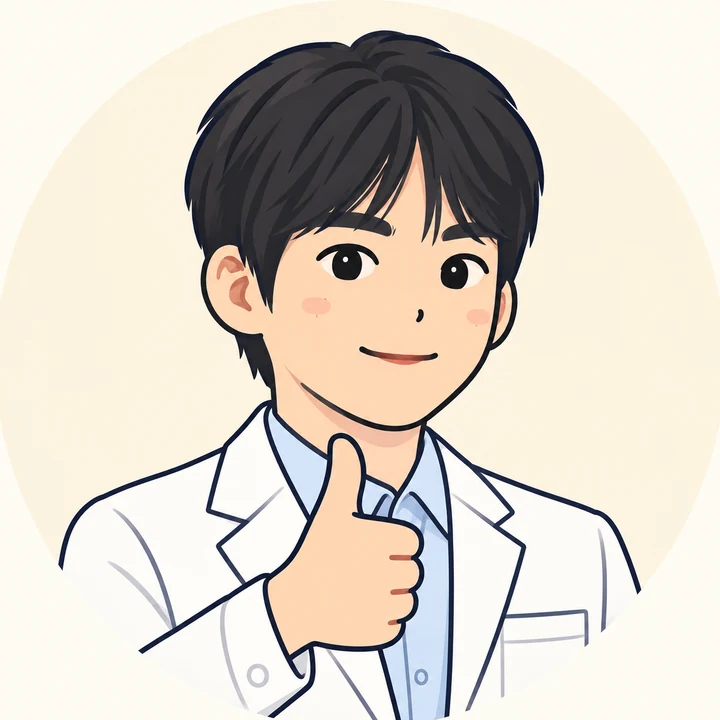

칠판 강의 화면
40분학습지 빈칸과 한 장씩 맞물리는 강의 화면(장면 15장 이상)
- 가져올 것
- 쓰고 계신 학습지 한 장(PDF·사진·한글 파일)
- 이럴 때
- 설명하는 시간이 긴 차시, 판서가 많은 차시

조승재해누리중학교 과학교사남은 시간은 실습을 진행하겠습니다! 다음 주에 실제로 들어가실 수업 한 차시를 정하고, 아래 메뉴에서 하나를 골라 40분 동안 만들어 보겠습니다. 계획만 세우셔도 괜찮아요^^ 만든 것과 계획은 맨 아래 나눔 벽에 올려서 다 같이 나누고 공유해요!
시작하시기 전에 세 가지만 기억해 주세요!
가상의 수업이 아니라 실제로 들어가실 반, 실제 차시입니다. 그래야 끝나고 바로 쓰실 수 있습니다.
아홉 가지 중 하나만 고릅니다. 메뉴마다 부탁문 두 개(설계 → 만들기)와 완성 기준이 있습니다.
교실 화면 크기로 열었을 때 틀린 곳이 없으면 완성입니다. 시간이 모자라면 계획만 세우셔도 괜찮습니다.
메뉴 가운데 여섯 가지는 제가 실제로 수업에 쓰고 있는 것이라 제가 만든 예를 열어 보실 수 있습니다. 수행평가, 실험 데이터, 탐구 주제 세 가지는 고등학교 수업에 맞춰 더했습니다.
고등학교 수업 내용은 선생님들께서 저보다 훨씬 잘 아십니다. 내용은 선생님께서, 만드는 순서와 부탁하는 말은 제가 맡겠습니다!
여기 적으신 내용이 아래 부탁문에 저절로 들어갑니다. 이 기기에만 저장됩니다.
학생 이름, 학교 이름, 성적은 적지 않습니다. 부탁문에 들어가 AI에게 그대로 넘어가기 때문입니다.
고르기 어려우시면 두 질문에 답해 보세요. 맞는 메뉴에 「추천」이 붙습니다.
학습지 빈칸과 한 장씩 맞물리는 강의 화면(장면 15장 이상)
한 단원을 A4 여섯 쪽에 담은 손글씨 노트(마지막 쪽은 찐막 정리)
선다형 4문항 + 서술형 1문항, 고른 오답마다 까닭이 나오는 채점 화면
값 하나를 바꾸면 결과가 바뀌는 그림 한 장(슬라이더 하나~둘)
생각 열기 → 탐구 → 정리 → 확인하기를 탭으로 넘기는 한 차시 페이지
예상하기 질문 → 손들기 → 반전 공개로 여는 도입 화면
과제 안내문 + 채점 기준표(상·중·하) + 학생이 내기 전에 스스로 확인하는 점검 화면
측정값을 표에 넣으면 그래프·추세선·기울기가 나오는 분석 화면
관심 분야를 고르면 이 단원 개념과 이어지는 탐구 질문 후보와 점검 질문이 나오는 화면
설계를 먼저 표로 받고, 표를 고친 다음에 만들어 달라고 하겠습니다!
처음부터 "만들어 줘"라고 하면 AI가 제 생각대로 다 만들어 버려서 고칠 곳이 많아집니다. 첫 부탁문은 일부러 "코드는 아직 쓰지 마"로 끝납니다. 표를 받으면 틀린 내용, 빠진 장면, 아이들이 막히는 곳을 먼저 고치시고, 그다음 두 번째 부탁문을 보내 주세요.
그림은 모두 「이미지 생성 대신 SVG로 직접」이라고 적어 두었습니다. AI 그림은 글자가 깨지고 + − 개수나 화살표 방향이 틀리기 쉽지만, SVG는 도형과 글자를 좌표로 그리기 때문에 틀린 곳을 한 줄만 고치면 됩니다.
바이브코딩 매뉴얼 하 · 중 · 상
순서를 하나하나 따라가고 싶으시면 아래 매뉴얼을 여셔도 됩니다. 그래도 저는 만들고 싶으신 것을 AI에게 말로 설명하고, 대화하면서 고쳐 나가시는 방법을 더 추천합니다!
처음 써 보시는 도구라면
부탁문을 붙여 넣고 보냅니다. 결과가 코드로만 나오면 "코드 말고 .html 파일로 만들어 줘"라고 한 번 더 말씀하세요. 캔버스·아티팩트 화면이 열리면 거기서 바로 미리 보실 수 있습니다.
빈 폴더를 하나 열고, 학습지 같은 자료를 그 폴더에 넣은 뒤 부탁문을 보냅니다. 만든 파일이 폴더에 바로 생깁니다. 자세한 순서는 ① 기초 매뉴얼에 있습니다.
만든 것이든 계획이든 한 줄로 올려 주시고, 다른 선생님 글에 한 줄씩 피드백을 남겨 주세요!
오늘 만든 것 · 세운 계획
평소에 만들고 싶었던 것
오늘 못 만드셔도 괜찮습니다. 늘 있었으면 했던 수업 도구를 적어 주시면, 다른 선생님이 「나도요」를 누르실 수 있습니다.
올리기 전에 네 가지만